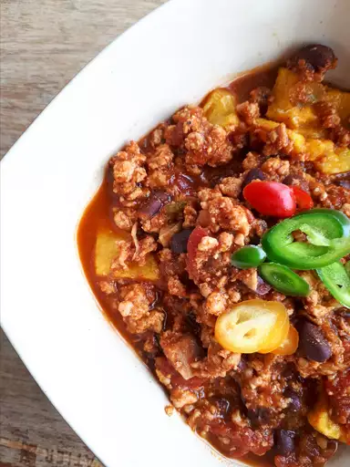

Pumpkin Turkey Chili

Description
Make our delicious Pumpkin Turkey Chili
Follow a detailed ingredient list and step-by-step instructions in the recipe below.
Ingredients
- 1 tablespoon vegetable oil
- 1 cup chopped onion
- 1 clove garlic, minced
- 1 pound ground turkey
- 2 cups pumpkin puree
- 1/2 cup shredded Cheddar cheese
Steps
- Heat oil in a large skillet over medium heat. Add onion, green bell pepper, yellow bell pepper, and garlic; cook and stir until tender.
- Stir in turkey and cook until evenly brown; drain.
- Mix in tomatoes and pumpkin. Season with chili powder, pepper, and salt. Reduce heat to low, cover, and simmer 15 to 20 minutes. Serve topped with Cheddar cheese and sour cream.